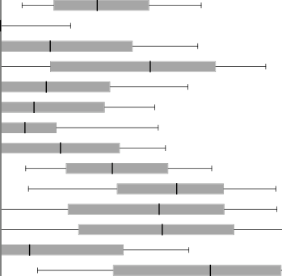

网络输入包含 Sentinel-2 的 12 个光谱波段以及循环经纬度坐标共 15 通道。模型由 8 个残差块（每块包含 256 个卷积核）组成，全程保持步长为 1，确保特征图分辨率严格锁定在原生 10 米 [p.2, F01]。网络同时输出高度均值 μ 与方差 σ²，并采用高斯负对数似然（Gaussian NLL）损失函数： $$\mathcal{L} = \frac{1}{2} \log \sigma^2 + \frac{(y - \mu)^2}{2\sigma^2}$$ 这一设计巧妙地让模型能够自适应感知数据固有噪声（Aleatoric uncertainty），并在高噪声区域自动衰减梯度惩罚，实现均值与不确定性的联合稳健优化 [p.2, p.3, F01]。 [p.2] [p.3] [F01]
作者从不同的随机权重初始化独立训练了 5 个残差网络。在推理阶段，针对全球陆地上的每一个空间网格，收集 2020 年内云量覆盖最低的最多 10 个 Sentinel-2 观测日期 [p.2, p.3]。对于每一个观测点，模型按预测方差的倒数作为权重进行加权平均： $$\mu_{final} = \frac{\sum_t \sigma_t^{-2} \mu_t}{\sum_t \sigma_t^{-2}}$$ 这一机制在物理上极其优雅：当某一天的光学影像受到薄云、瞬时阴影或季节性异常干扰时，该时相输出的预测方差会自动飙升，从而在最终复合均值中被赋予极低的加权系数，极大提升了全球图谱的抗噪鲁棒性 [p.3, p.5]。 [p.3] [p.5]
首先，在留出的数百万个全球 GEDI 足印验证集上（Fig. 1b-d），模型取得了 balanced RMSE = 7.3 m、balanced MAE = 5.5 m 的优异精度 [F01, p.3]。尤为关键的是，作者对比了国际通用的 UMD 全球地图：UMD 地图在 >5m 的森林中存在普遍低估，且树木越高低估越严重（平均偏差高达 -7.1m）；而本模型成功将平均偏差缩窄至 -1.7m，彻底纠正了高冠层严重饱和压制的历史缺陷 [F01, p.3, p.4]。 [F01] [p.3] [p.4]
其次，为了排除 GEDI 自身足印测量的系统误差共性，作者搜集了跨越北美、中美、欧洲和非洲加蓬的 24 个 Sentinel-2 图幅的独立机载高精度激光雷达（12个 LVIS 和 12个 ALS 图幅，Extended Data Table 1）[p.4, p.22]。在 GEDI 空间覆盖范围内，本方法取得了 7.9m RMSE 与 1.7m 偏差（对比 UMD 的 9.1m RMSE 与 -4.5m 偏差）；而在超出 GEDI 轨道的覆盖外区域，平均 RMSE 更是达到 5.3m，证明模型学习到了具备跨大陆泛化力的植被光学-几何映射规律 [p.4, p.22]。 [p.4] [p.22]
经验校准实验表明，模型预测的标准差与真实误差高度单调正相关：当用户剔除预测标准差最高的 20% 不确定像素后，全体验证集上的整体 RMSE 从 6.0m 骤降至 5.2m（降低 13%），系统偏差从 1.3m 降至 1.0m（改善 23%）[p.4, p.5]。在全球宏观统计推断方面，模型基于全球 1.3 万亿像元的部署结果揭示：全球约 41% 陆地表面生长有 >5m 树木，30% >10m，而极为珍稀的 >30m 巨树仅占 5%；且在这些全球最高的巨树生态系统中，有高达 34% 位于法定自然保护区内，为国际生态学界的保护区有效性评估提供了权威依据 [p.5, p.6]。 [p.4] [p.5] [p.6]
【事实边界与审慎使用指南】首先，10米分辨率代表产品的离散像元采样间距（GSD），绝不等于每一个 10 米像元都具备等同于实地雷达打样的独立测量精度；在缺乏 GEDI 穿透的密林中，模型高度依赖周边纹理与地理共变量的平滑推断 [p.2, p.6]。其次，光学反射率存在固有的‘同谱异质’（Metamerism）物理不可辨识性，无法在物理机理上百分之百保证唯一逆演。在阿拉斯加、育空和青藏高原等高纬度高海拔极端区域，受云雾雪盖及冻原低矮植被影响，不确定性水平偏高，且 <5m 矮树存在一定的过估计倾向 [p.5, p.6, p.7]。使用者在评估区域碳储量或扰动归因时，必须紧密结合该产品自带的逐像元不确定性图层与独立野外样地数据 [p.6, p.7]。 [p.2] [p.5] [p.6] [p.7]
当前稿件引用了 0 条主张、0 组图表和 0 张数据表。
页面锚点：p.1